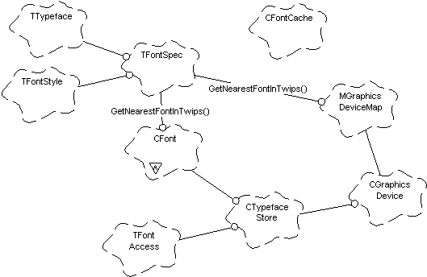

|
| |
A device-independent font specification is provided
—TFontSpec (in the twips domain) —and the means to map the
specification to a concrete device-dependent font CFont* (in the
device domain). The GetNearestFontInTwips() function provides a
means of getting from a TFontSpec to the CFont* which
is the nearest font in the graphics device’s typeface store.

The relationships between the font classes
Due to the necessary number of calculations and typeface store
searches involved in the GetNearestFontInTwips() function, a font
cache, holding a cache of TFontSpec - CFont*
relations for the current graphics map, is provided as an alternative to
invoking this function.
As the fonts supported by the device are stored in a device dependent
form (TTypefaceSupport), pixels to twips functions are also
provided to allow the list of supported font sizes to be presented in user
dialogs as twips/points rather than pixels.
The typeface store mechanism allows any font to be used by more than
one client and keeps an access count of the number of clients using a
particular font. This access count is increased and decreased by the
GetNearestFontInTwips() and ReleaseFont() functions
respectively, and a font is only deleted from memory when its access count
reaches zero.
Copyright ©2002 Symbian Ltd. 6.1-00174 |
|